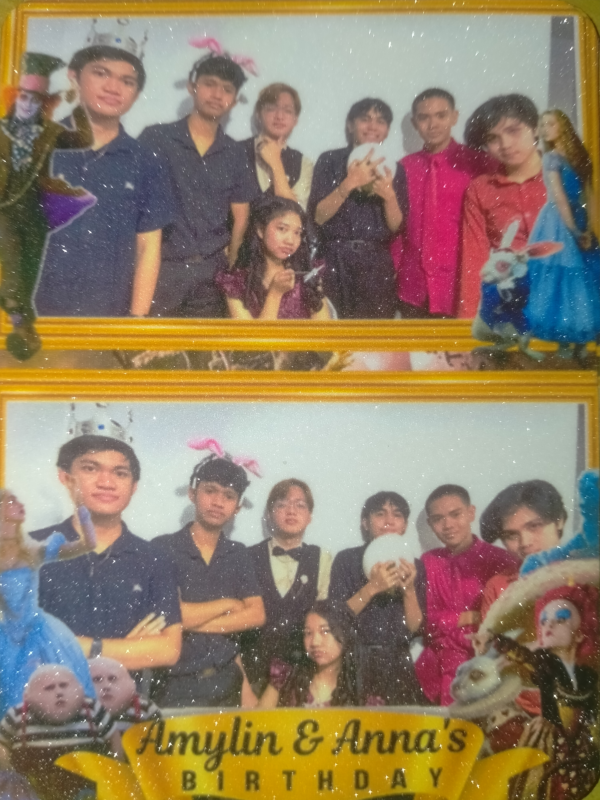
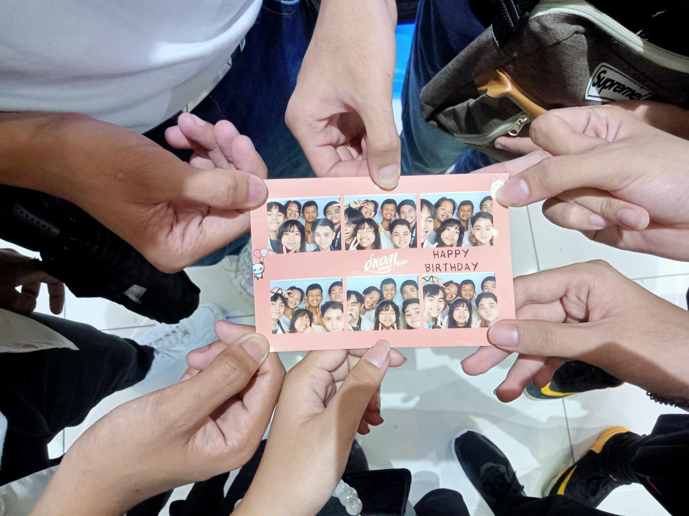
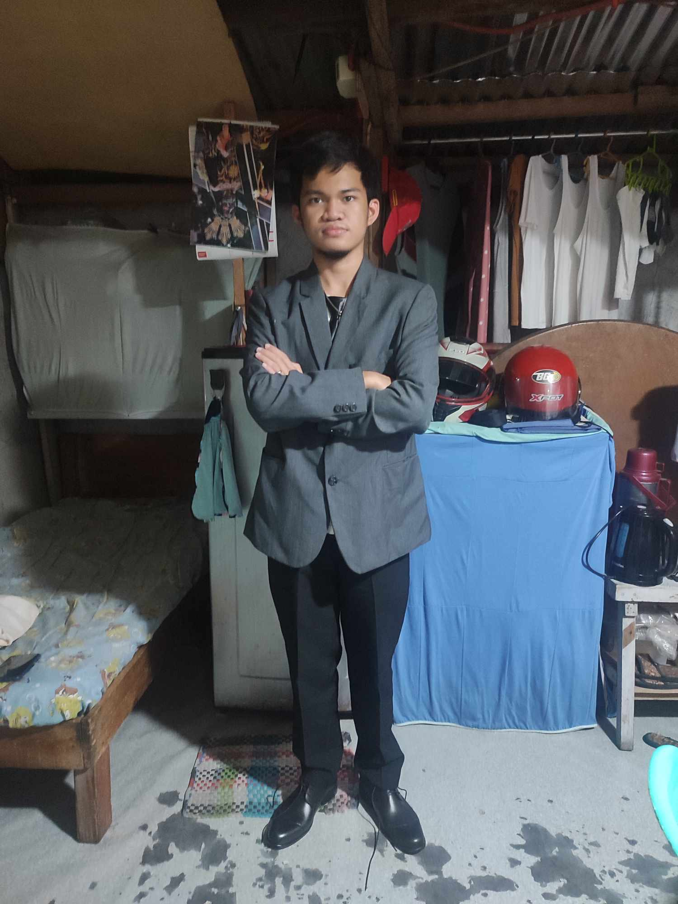
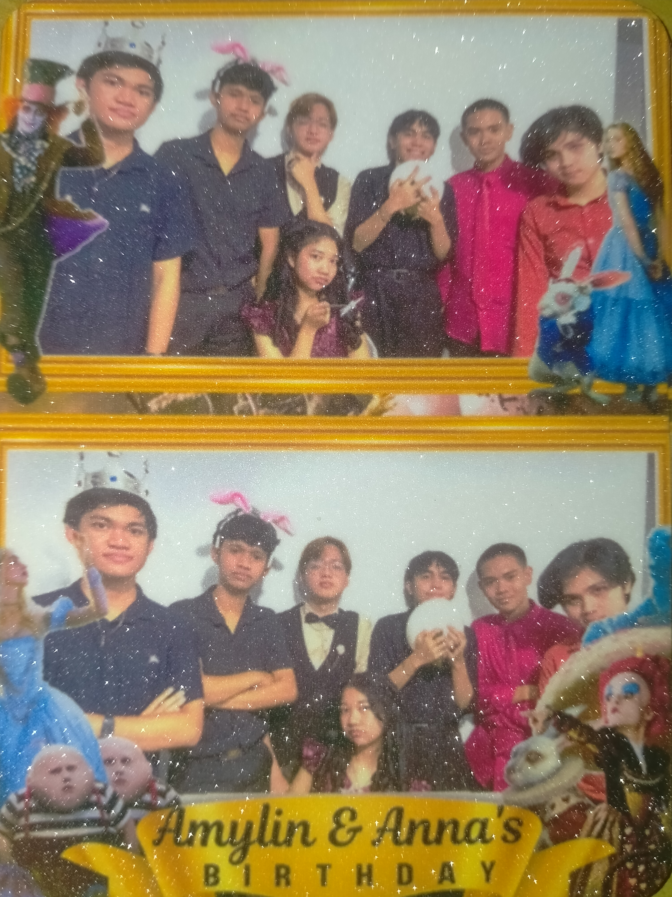
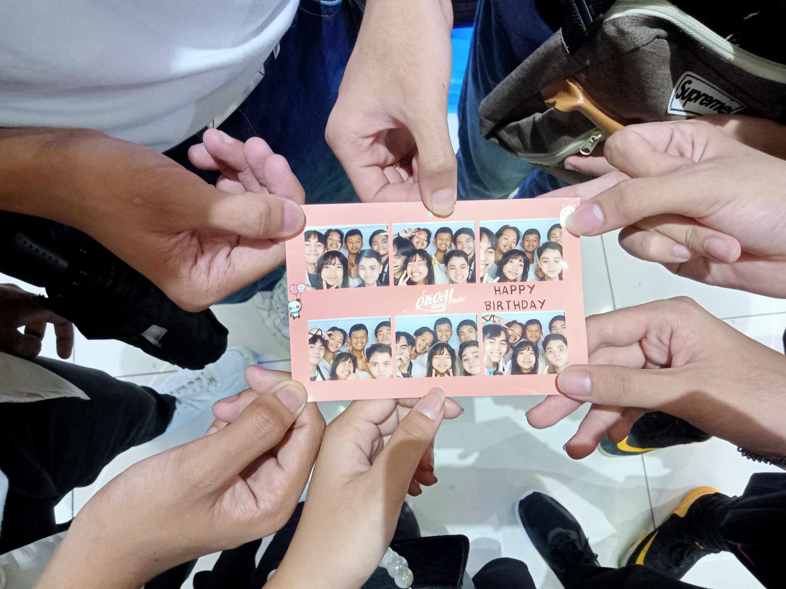
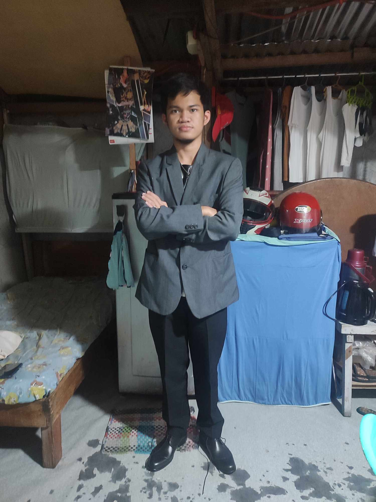

Welcome to My Personal Website
Welcome to My Website! Hi, I’m Harold Mark C. Hugo, a passionate individual currently pursuing a Bachelor of Science in Information Technology at Quezon City University. Fresh out of high school and diving deep into the tech world, I’m on a journey to learn, grow, and build innovative solutions. When I’m not busy coding or exploring new tech trends, you’ll likely find me enjoying my hobbies—playing online games, hitting the badminton courts, or discovering new places. This website is my way of sharing my experiences, interests, and the projects I’m working on as I navigate through the IT world. Let’s connect and explore the world of technology together!
My Gallery
 





About Me
Hello! I’m Harold Mark C. Hugo, a recent high school graduate and a proud student at Quezon City University, pursuing a Bachelor of Science in Information Technology (BSIT). This next phase of my academic journey excites me as I dive deep into the world of technology, which has always fascinated me. I’ve chosen IT because it’s a dynamic and ever-evolving field that blends innovation with problem-solving, and I believe it holds endless growth opportunities. Technology is integral to almost every aspect of modern life, and I’m eager to learn the skills and knowledge that will allow me to contribute to shaping the future.
Leave a Comment